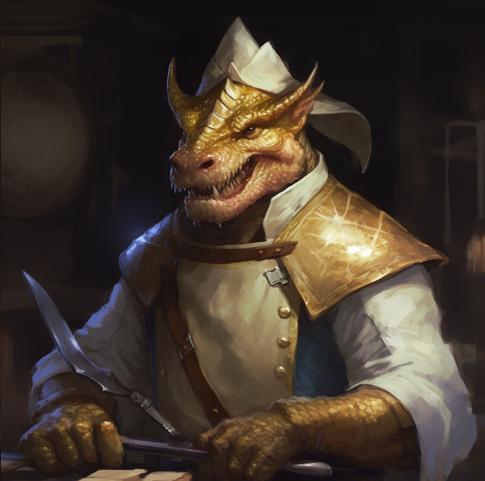

A stout dwarven warrior, who was not afraid of sacrificing his life to save the kingdom.
A loyal human warlock, who made a pact with an unknown creature lurking in the depths.
An ex-soldier dragonborn chef, pursuin his dream of nobility.
A male naiad, accidentally displaced from the Fey to the material realm, seeking a way home.

A half-drow, hiding her identity as wood-elf, just wishing to do some good in the world to make it a happier place.
A diligent student, part time in an univesity, the other time chasing knowledge for his Geenie patron.